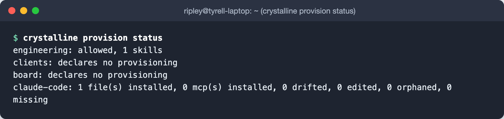

15 Equipping the agent
A wrench is not a mechanic. A new colleague’s first day ends with a laptop, a badge and a login to everything the team lives in. Then comes the part that is on no checklist: some time in the afternoon somebody pulls a chair over to show them how the deploy script is actually run, which flag everybody passes, which one you never pass on a Friday. The tool arrives with a person who knows what it is for, or it arrives as a surprise.
The chapters before this one gave the agent the floor plan (Chapter 8), the teaching, a place in the team’s review and a name on the door. What it still lacks is the toolbox. Crystalline’s answer is that the domains holding the knowledge also ship the tools that knowledge depends on, into the harness, with a person’s consent, and keep them current afterwards. This chapter is that mechanism, and it is the last practical one before the book turns to what all of it was for.
15.1 What a domain can ship
The list is short. Skills, the playbooks a harness loads before a kind of task. Slash commands, the short prompts a person invokes by name. Subagent definitions, a role with its own instructions that the harness can hand a piece of work to. And MCP server configs, so that a domain about the payments service can bring along the server that reaches the payments staging environment. Each kind is a folder in or beside the domain, and the manifest declares them in a ## Provisioning section, one bullet per kind:
## Provisioning
- skills: skills
- commands: commands
- agents: agents
- mcps: mcpsEach bullet is type: path. The path is relative to the manifest itself and may climb out of the domain root with ../, for a folder that lives beside the domain rather than inside it. The mcps folder holds one JSON file per server, named by its own name member or, failing that, by the file. The starter manifest that crystalline domain init scaffolds leaves the section out on purpose: it is added by hand, once a domain has something to ship. Tyrell’s engineering manifest gains it the week Ripley writes the deploy skill.
An artifact is written once, in whichever dialect its author’s harness speaks, and translated into every harness whose format can carry it. Claude Code and Codex take all four kinds: an agent written as markdown becomes Codex’s TOML dialect, or the other way round, and an MCP server registers through the harness’s own CLI. The Copilot CLI takes every kind but commands, since it has no prompt-file surface for one to land on, so a command is skipped there with a notice rather than silently. Where the target cannot express a field, a vendor model name or a permission mode, the field is dropped and the notice says which.
15.2 Why the tools travel with the knowledge
A harness has a skills folder of its own, and a team could commit into it directly, so it is fair to ask what a domain adds. The answer is the wrench. The knowledge that says when a tool applies, and how it is run here, is an engram: the runbook that says the deploy skill is for the payments service and never for the ledger, the gotcha about the flag, the convention about Fridays. The tool is the skill. Keep them in the same domain and a new member’s harness receives both in one motion. The engram that says “use this” cannot drift from the thing to use, because the two live together and travel together.
The rule that follows: never provision a tool without the engram that says when it applies. A skill teaches a harness how; only the domain’s knowledge says whether this is the moment, and whether it is the moment here. A well-equipped domain reads like a workshop where every drawer is labelled, and the label is an engram somebody can correct. The sonic screwdriver famously does not do wood; a tool arrives with its limits written down or it arrives as a surprise.
Crystalline’s own skills are the worked example. The routing, capture, schema and collaboration skills from chapter 4, and the consolidated one for Claude Desktop, are exactly this: playbooks that say how to use the tools well, shipped by the thing whose knowledge they depend on. crystalline install places them into the harness’s skills folder. The install receipt keeps them current across upgrades, with an edited copy kept beside the new one as SKILL.md.bak. A remote harness that never ran the CLI reads the same five through the skills tool, an index with no arguments and one full SKILL.md by name, or as skill://<name>/SKILL.md resources. Provisioning is that mechanism, opened to your domains.
15.3 Consent
Nothing installs until a person decides. A domain that declares a Provisioning section with something in it and has no decision yet surfaces at the start of the next session, as one line trailing the routing block the hook delivers:
[crystalline] The `engineering` domain ships artifacts to provision
(mcps: 1, skills: 1) but has no decision yet - ask the user, then apply
it with the `provision` tool or `crystalline provision allow engineering`.The agent raises it with whoever is at the keyboard and applies the answer with the provision tool, or the person does it from the terminal:
crystalline provision allow engineering # opt in, then reconcile
crystalline provision deny engineering # opt out, removing anything already shipped
crystalline provision status # every domain's decision, every harness's installed stateThe decision is per domain and per machine. It is recorded in the domain’s registration in config.yaml, as provision: true or false, never in the manifest, for the same reason chapter 13 kept review mode out of it: what a domain ships is knowledge the team shares; whether this machine takes it is a choice its owner makes. Denying removes whatever the domain already shipped. status prints every domain’s decision and counts, every onboarded harness’s installed state and the domains still waiting (Figure 15.1). The provision tool answers the same report to an agent, and until some domain declares a section it has nothing to allow or deny and says so.

15.4 Reconcile
Bare crystalline provision reconciles every opted-in domain into every harness this machine onboarded with crystalline install. Run it as often as you like; it converges. It installs what is missing, updates what a domain changed and retires what a domain no longer ships. Anything it did not write itself it treats as somebody else’s. A provisioned file you edited by hand is still brought current, with your edited version kept beside it as a .bak copy rather than lost; retiring an edited file renames it to .bak the same way. A file Crystalline never wrote is adopted when it already matches byte for byte and otherwise left alone, never overwritten. An MCP server name already registered by somebody else is left where it is, with a notice.
Most of the time nobody runs it. The session-start hook checks whether anything drifted since the last reconcile, a stat of the domain’s folders against the receipt with no hashing. When something did, it reconciles the file artifacts on the spot and reports one line: how many were refreshed. MCP changes are the exception: registering a server means spawning the harness’s own CLI, which a hook should not do, so those wait for an explicit run and a second line says so. Change a skill in the domain, and the next session has it.
crystalline doctor is the report-only view. When a domain ships artifacts it lists each declaring domain’s decision and shipped counts, then each onboarded harness’s counts of drifted, edited, orphaned and missing files against what was last reconciled; --fix never reconciles a harness. An undecided domain is a normal state awaiting a person, never a fault, and an edited file is left alone by design.
15.5 The team’s toolbox
A team domain ships to everyone. The folders the manifest declares travel with the domain when it is pulled; even a folder that lives beside the domain in the repository is mirrored down with it. Each member’s harness sees the same skill Ripley merged, and a change that lands in the repository reaches every harness at its next session start. Each member decides once, on their own machine; the decision is theirs, the contents are the team’s. Day one now includes the tools as well as the floor plan.
Tyrell’s engineering domain gains two folders in October. Under skills/ sits payments-deploy, the deploy procedure Ripley had been explaining by chat: which environment first, what the health check should say before the second, why the old health check lies. Under mcps/ sits one JSON file for the server that reaches the payments staging environment. Beside them, in the domain itself, is a runbook engram saying when the skill applies and linking to the Encom chargeback window, next to the convention about Fridays the domain already held. She commits the folders to the repository, Dallas reviews the pull request and it merges.
Deckard’s next session opens with the routing block and one extra line: engineering ships artifacts to provision, two of them, and has no decision yet. His agent asks, he says yes and the agent calls provision with allow. The skill lands in his harness’s skills folder, and the staging server is registered through his harness’s CLI. A week later he adds a note to the installed SKILL.md about a port that differs on his machine, and doctor counts one edited file and leaves it alone. In November Ripley changes the skill in the repository. The pull brings it down, the next session start reconciles and his agent reports one artifact refreshed; his version sits beside the new one as SKILL.md.bak. He moves the note where it belonged in the first place, into an engram about his machine, and the skill stays the team’s.
A pair of receipts does the remembering. The install receipt says which harnesses crystalline install onboarded on this machine, and provisioning targets only those. The provisioning receipt is the ownership record: every file and MCP server a reconcile installed, with a hash of what it wrote. A recorded file is Crystalline’s to update or remove; an unrecorded one is somebody else’s. An installed file whose bytes no longer match the recorded hash is a hand edit; a domain whose current bytes differ from that hash is drift. That one receipt is where status and doctor read their edited and drifted counts. Domains are projected in the order config.yaml registers them, and when two ship a file to the same path the first wins, with a notice naming both. A virtual domain never ships anything; it has no folder to ship from.
The stranger on main street had a laptop of their own and no idea what your deploy script was called. A colleague is somebody you handed the tools, on purpose, and showed which drawer they live in. The agent is handed them the same way: one domain at a time, with a yes each time and never a wrench without the label.
A domain ships the tools its knowledge depends on: skills, slash commands, subagent definitions and MCP server configs, declared in a ## Provisioning section of its manifest and translated into every harness whose format can carry them. Nothing installs until a person decides; an undecided domain surfaces at session start, crystalline provision allow and deny record the decision per domain and per machine, and status reports every decision and every harness’s state. A bare crystalline provision reconciles idempotently, keeping hand edits as .bak and never overwriting a file it did not write; the session-start hook reconciles file artifacts on its own; doctor reports drift without touching anything. Pair every tool with the engram that says when it applies; a team domain ships the toolbox to every member’s harness with the knowledge that explains it.